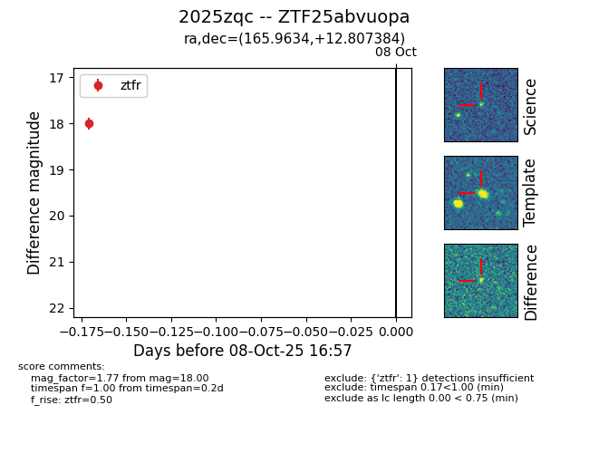

FINK: ZTF25abvuopa
Lasair: ZTF25abvuopa
ALeRCE: ZTF25abvuopa
TNS: 2025zqc
YSE: 2025zqc
ZTF25abvuopa (ztf,fink)
2025zqc (tns,yse)
equatorial (ra, dec) = (165.9634,+12.80738)
galactic (l, b) = (237.2407,+61.05081)

last ztfr=18.00
1 ztfr detections